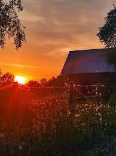

Ох, лето красное! любил бы я тебя,
Когда б не зной, да пыль, да комары, да мухи.
Ты, все душевные способности губя,
Нас мучишь; как поля, мы страждем от засухи;
Лишь как бы напоить, да освежить себя —
Иной в нас мысли нет, и жаль зимы старухи,
И, проводив ее блинами и вином,
Поминки ей творим мороженым и льдом.
| июнь | 30 |
| июль | 31 |
| август | 31 |
